Recursos
F2L · Primeras dos capas
Básicos 4 casos


Blanco de lado 12 casos
AE1
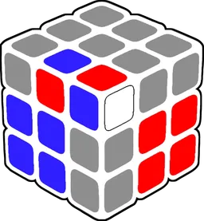
Blanco de lado · AE1
R U' R' U R U' R' U2 R U' R'AE2
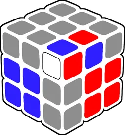
Blanco de lado · AE2
U' R U2 R' U F' U' FAE3
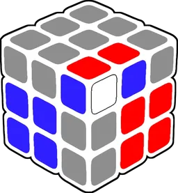
Blanco de lado · AE3
R U' R' U2 F' U' FAE4
Blanco de lado · AE4
F' U F U2 R U R'AE5
Blanco de lado · AE5
U' R U' R' U R U R'AE6
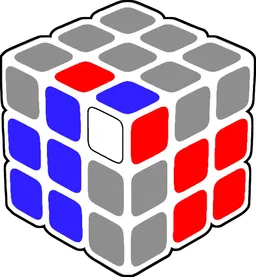
Blanco de lado · AE6
d R' U R U' R' U' RAE7
Blanco de lado · AE7
U F' U' F U2 F' U FAE8
Blanco de lado · AE8
U' R U R' U' R U2 R'AE9
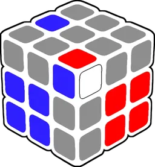
Blanco de lado · AE9
U' R U R' U R U R'AE10
Blanco de lado · AE10
U' R U' R' U F' U' FAE11
Blanco de lado · AE11
y' U R' U2 R U2 R' U RAE12
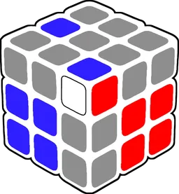
Blanco de lado · AE12
U' R U2 R' U2 R U' R'Blanco arriba 8 casos
UP1
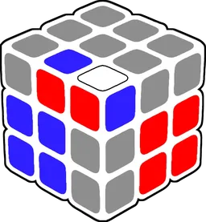
Blanco arriba · UP1
R U R' U2 R U R' U' R U R'UP2
Blanco arriba · UP2
R U R' U R U2 R' F' U2 FUP3
Blanco arriba · UP3
F' U2 F U F' U' FUP4
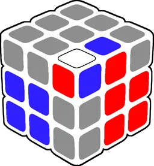
Blanco arriba · UP4
R U2 R' U' R U R'UP5
Blanco arriba · UP5
U' F' U2 F U' F' U FUP6
Blanco arriba · UP6
U R U2 R' U R U' R'UP7
Blanco arriba · UP7
U2 R U R' U R U' R'UP8
Blanco arriba · UP8
U2 F' U' F U' F' U FEsquina abajo 6 casos


Arista en medio 6 casos
TM1
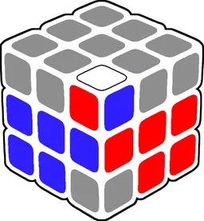
Arista en medio · TM1
(R U R' U') (R U R' U') R U R'TM2
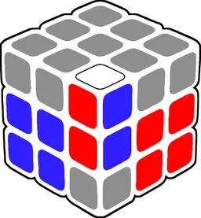
Arista en medio · TM2
R U' R' F' U2 FTM3
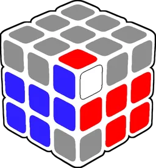
Arista en medio · TM3
U' R U2 R' U R U R'TM4
Arista en medio · TM4
U' R U' R' U2 R U' R'TM5
Arista en medio · TM5
d R' U' R d' R U R'TM6
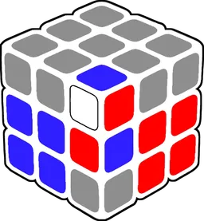
Arista en medio · TM6
U' R U R' d R' U' RAmbas en su ranura 5 casos


OLL · Orientación de la última capa
Cruz superior 7 casos


Esquinas orientadas 2 casos

Punto 8 casos
OLL 1
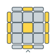
OLL 1
R U2 R2 F R F' U2 R' F R F'OLL 2
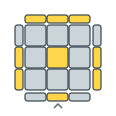
OLL 2
(r U r') U2 (R U2 R') U2 (r U' r')OLL 3
OLL 3
R' F2 R2 U2 R' F R U2 R2 F2 ROLL 4
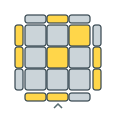
OLL 4
R' F2 R2 U2 R' F' R U2 R2 F2 ROLL 17
OLL 17
F R' F' R U S' R U' R' SOLL 18
OLL 18
R U2 R2 F R F' U2 M' U R U' r'OLL 19
OLL 19
S' R U R' S U' R' F R F'OLL 20
OLL 20
S R' U' R U R U R U' R' S'Cuadrado 2 casos

Línea 4 casos


Pez 4 casos


Rayo 6 casos


Caballo 4 casos


Formas irregulares 4 casos


Forma de P 4 casos
Forma de T 2 casos


Forma de C 2 casos


Forma de L 6 casos


Forma de W 2 casos

PLL · Permutación de la última capa
Esquinas adyacentes 8 casos
Aa
Permutación Aa
x (R' U R') D2 (R U' R') D2 R2 x'Ab
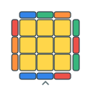
Permutación Ab
x R2 D2 (R U R') D2 (R U' R) x'F
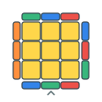
Permutación F
R' U' F' R U R' U' R' F R2 U' R' U' R U R' U RJa
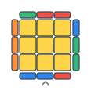
Permutación Ja
x R2 F R F' R U2 r' U r U2 x'Jb
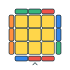
Permutación Jb
(R U R' F') (R U R' U') R' F R2 U' R' U'Ra
Permutación Ra
(R U' R' U') R U (R D R') U' (R D' R') U2 R' U'Rb
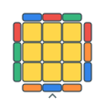
Permutación Rb
(R' U2 R U2) R' F (R U R' U') R' F' R2T
Permutación T
(R U R' U') R' F R2 U' R' U' (R U R' F')Esquinas diagonales 5 casos
E
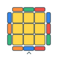
Permutación E
x' (R U' R' D) (R U R' D') (R U R' D) (R U' R' D') xNa
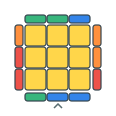
Permutación Na
(R U R' U) (R U R' F' R U R' U' R' F R2 U' R') (U2 R U' R')Nb
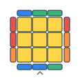
Permutación Nb
r' D' F r U' r' F' D r2 U r' U' r' F r F'V
Permutación V
(R' U R' U') (R D' R' D) R' U D' R2 U' R2 D R2Y
Permutación Y
F (R U' R' U') (R U R' F') (R U R' U') (R' F R F')Permutaciones G 4 casos

Solo aristas 4 casos


Fuentes y créditos
Diagramas F2L de Eloi Bellavista Mogas, reproducidos con sus identificadores originales. CubingCompass · CC BY-NC 4.0
Secuencias de la última capa consultadas en CubingApp. Los diagramas se generan a partir de los algoritmos. OLL · PLL